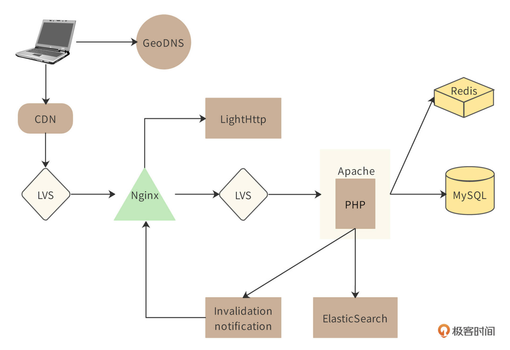
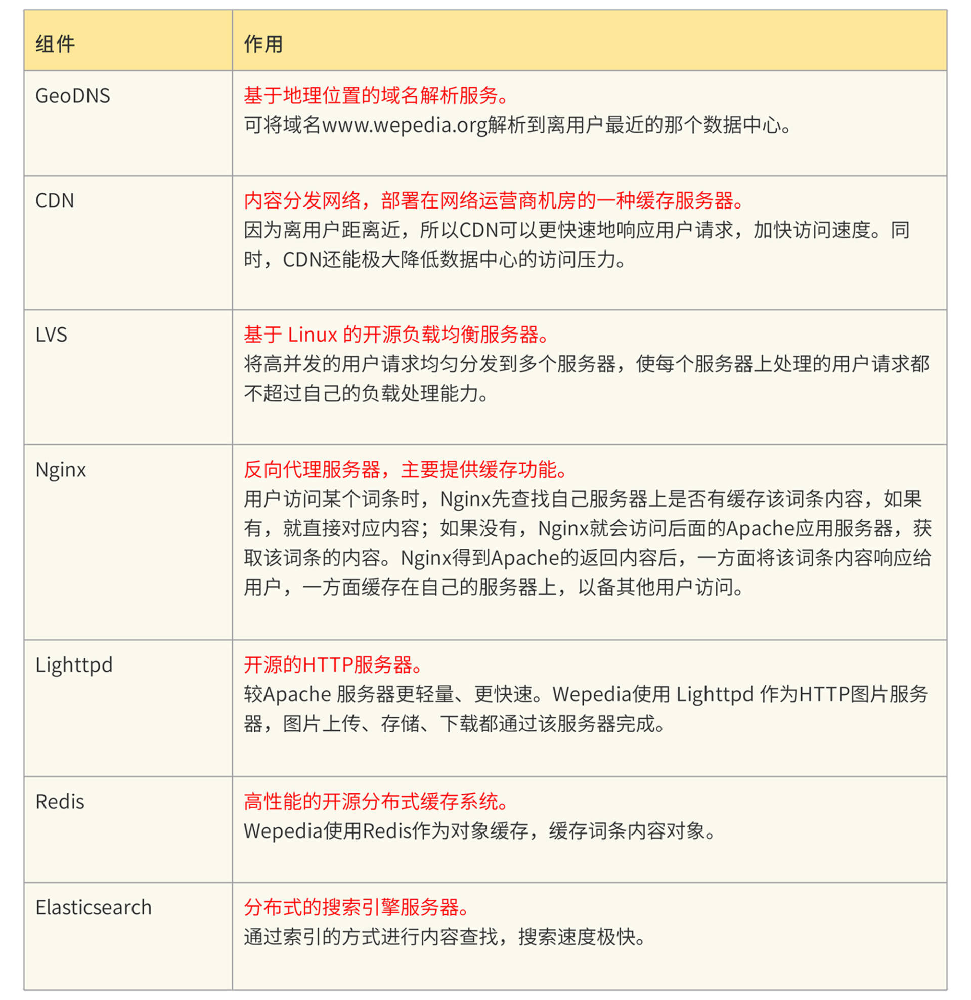

- 00 开篇词 “附身”大厂架构师，身临其境设计高并发系统.md
- 01 软件建模与文档：架构师怎样绘制系统架构蓝图？.md
- 02 高并发架构设计方法：面对高并发，怎么对症下药？.md
- 03 短 URL 生成器设计：百亿短 URL 怎样做到无冲突？.md
- 04 网页爬虫设计：如何下载千亿级网页？.md
- 05 网盘系统设计：万亿 GB 网盘如何实现秒传与限速？.md
- 06 短视频系统设计：如何支持三千万用户同时在线看视频？.md
- 07 海量数据处理技术回顾：为什么分布式会遇到 CAP 难题？.md
- 08 秒杀系统设计：你的系统可以应对万人抢购盛况吗？.md
- 09 交友系统设计：哪种地理空间邻近算法更快？.md
- 10 搜索引擎设计：信息搜索怎么避免大海捞针？.md
- 11 反应式编程框架设计：如何使方法调用无阻塞等待？.md
- 12 高性能架构的三板斧：分析系统性能问题从哪里入手？.md
- 13 微博系统设计：怎么应对热点事件的突发访问压力？.md
- 14 百科应用系统设计：机房被火烧了系统还能访问吗？.md
- 15 限流器设计：如何避免超预期的高并发压力压垮系统？.md
- 16 高可用架构的十种武器：怎么度量系统的可用性？.md
- 17 Web 应用防火墙：怎样拦截恶意用户的非法请求？.md
- 18 加解密服务平台：如何让敏感数据存储与传输更安全？.md
- 19 许可型区块链重构：无中心的区块链怎么做到可信任？.md
- 20 网约车系统设计：怎样设计一个日赚 5 亿的网约车系统？.md
- 21 网约车系统重构：如何用 DDD 重构网约车系统设计？.md
- 22 大数据平台设计：如何用数据为用户创造价值？.md
- 结束语 一个架构师的一天.md
14 百科应用系统设计：机房被火烧了系统还能访问吗？
你好，我是李智慧。
百科知识应用网站是互联网应用中一个重要的类别。很多人上网是为了获取知识，而互联网上的信息良莠并存，相对说来，百科知识应用网站能为普通人提供较为可信的信息。因此，百科知识网站虽然功能单一、设计简单，但是依然撑起了互联网的一片天空：维基百科是全球访问量TOP10的网站，百度百科是百度的核心产品之一。
我们准备开发一个供全球用户使用的百科知识应用系统，系统名称为“Wepedia”。
Wepedia的功能比较简单，只有编辑词条和搜索查看词条这两个核心功能。但是Wepedia的设计目标是支撑每日10亿次以上的访问压力。因此设计目标主要是简单、高效地支持高并发访问，以及面对全球用户时保证$\small 7\times24$小时高可用。
概要设计
Wepedia的整体架构，也就是简化的部署模型如图。

在梳理Wepedia整体逻辑之前，先说明下架构图中核心组件的作用。

用户在Web端查看一个百科词条的时候，首先通过GeoDNS进行域名解析，得到离用户最近的数据中心所属的CDN服务器的IP地址。用户浏览器根据这个IP地址访问CDN服务器，如果CDN服务器上缓存有用户访问的词条内容，就直接返回给用户；如果没有，CDN会访问和自己在同一个区域的Wepedia的数据中心服务器。
准确地说，CDN访问的是Wepedia数据中心负载均衡服务器LVS的IP地址。请求到达LVS后，LVS会将该请求分发到某个Nginx服务器上。Nginx收到请求后，也查找自己服务器上是否有对应的词条内容，如果没有，就将请求发送给第二级LVS负载均衡服务器。
接着，第二级LVS将请求分发给某个Apache服务器，Apache会调用PHP程序处理该请求。PHP程序访问Redis服务器集群，确认是否有该词条的对象。如果有，就将该对象封装成HTML响应内容，返回给用户；如果没有，就访问MySQL数据库来查找该词条的数据内容。PHP程序一方面会将MySQL返回的数据构造成对象，然后封装成HTML返回用户，一方面会将该对象缓存到Redis。
如果用户的HTTP请求是一个图片，那么Nginx则会访问LightHttp服务器，获取图片内容。
因为Nginx缓存着词条内容，那么当词条编辑者修改了词条内容时，Nginx缓存的词条内容就会成为脏数据。解决这个问题通常有两种方案，一种是设置失效时间，到了失效时间，缓存内容自动失效，Nginx重新从Apache获取最新的内容。但是这种方案并不适合Wepedia的场景，因为词条内容不会经常被编辑，频繁失效没有意义，只是增加了系统负载压力；而且，在失效时间到期前，依然有脏数据的问题。
Wepedia为了解决Nginx缓存失效的问题，采用了另一种解决方案：失效通知。词条编辑者修改词条后，Invalidation notification模块就会通知所有Nginx服务器，该词条内容失效，进而从缓存中删除它。这样，当用户访问的时候，就不会得到脏数据了。
多数据中心架构
Wepedia在全球部署多个数据中心，可以就近为用户提供服务。因为即使是最快的光纤网络，从地球一端访问另一端的数据中心，在通信链路上的延迟就需要近150ms。
$\small （地球周长4万KM\div2）\div光速30万KM/s\times请求响应2次通信\approx133ms$
150ms是一个人类能够明显感知的卡顿时间。再加上服务器的处理时间，用户的响应等待时间可能会超过1秒钟，而页面加载时间超过1秒钟，用户就会明显不耐烦。多数据中心架构可以通过GeoDNS为用户选择最近的数据中心服务器，减少网络通信延迟，提升用户体验。
另一方面，多数据中心还具有容灾备份功能，如果因为天灾或者人祸导致某个数据中心机房不可用，那么用户还可以访问其他数据中心，保证Wepedia是可用的。
但是多数据中心需要解决数据一致性的问题：如果词条编辑者修改词条内容，只记录在距离自己最近的数据中心，那么这份数据就会和其他数据中心的不一致。所以，Wepedia需要在多个数据中心之间进行数据同步，用户不管访问哪个数据中心，看到的词条内容都应该是一样的。
Wepedia的多数据中心架构如图。

Wepedia的多数据中心架构为一主多从架构，即一个主数据中心，多个从数据中心。如果用户请求是Get请求（读请求），那么请求就会在该数据中心处理。如果请求是Post请求（写请求），那么请求到达Nginx的时候，Nginx会判断自己是否为主数据中心，如果是，就直接在该数据中心处理请求；如果不是，Nginx会将该Post请求转发给主数据中心。
通过这种方式，主数据中心根据Post请求更新数据库后，再通过Canal组件将更新同步给其他所有从数据中心的MySQL，从而使所有数据中心的数据保持一致。同样，LightHttp中的图片数据也进行同步，开发LightHttp插件，将收到的图片，发送给所有从数据中心。
数据中心之间采用类似ZooKeeper的选主策略进行通信，如果主数据中心不可用，其他数据中心会重新选举一个主数据中心。而如果某个从数据中心失火了，用户请求域名解析到其他数据中心即可。
这种多数据中心架构虽然使词条编辑操作的时间变长，但是由于Wepedia的绝大多数请求都是Get请求（Get与Post请求比超过1000：1），因此对系统的整体影响并不很大。同时用一种简单、廉价的方式实现多数据中心的数据一致性，开发和运维成本都比较低。
详细设计
作为一个百科服务类网站，Wepedia 主要面临的挑战是：应对来自全球各地的巨量并发的词条查询请求。因此详细设计重点关注Wepedia的性能优化。
前端性能优化
前端是指应用服务器（也就是 PHP 服务器）之前的部分，包括 DNS 服务、 CDN 服务、反向代理服务、静态资源服务等。对 Wepedia 而言，80% 以上的用户请求可以通过前端服务返回，请求根本不会到达应用服务器，这也就使得网站最复杂、最有挑战的PHP应用服务端和存储端压力骤减。
Wepedia 前端架构的核心是反向代理服务器 Nginx 集群，大约需要部署数十台服务器。请求通过 LVS 负载均衡地分发到每台 Nginx 服务器，热点词条被缓存在这里，大量请求可直接返回响应，减轻应用负载压力。而Nginx 缓存 不能命中的请求，会再通过 LVS 发送到 Apache 应用服务器集群。
在反向代理 Nginx 之前，是 CDN 服务，它对于 Wepedia 性能优化功不可没。因为用户查询的词条大部分集中在比重很小的热点词条上，这些词条内容页面缓存在 CDN 服务器上，而 CDN 服务器又部署在离用户浏览器最近的地方，用户请求直接从 CDN 返回，响应速度非常快，这些请求甚至根本不会到达 Wepedia 数据中心的 Nginx 服务器，服务器压力减小，节省的资源可以更快地处理其他未被 CDN 缓存的请求。
Wepedia CDN 缓存的几条准则：
- 内容页面不包含动态信息，以免页面内容缓存很快失效或者包含过时信息。
- 每个内容页面有唯一的 REST 风格的 URL，以便 CDN 快速查找并避免重复缓存。
- 在 HTML 响应头写入缓存控制信息，通过应用控制内容是否缓存及缓存有效期等。
服务端性能优化
服务端主要是 PHP 服务器，这里是业务逻辑的核心部分，运行的模块都比较复杂笨重，需要消耗较多的资源，Wepedia 需要将最好的服务器部署在这里（和数据库配置一样的服务器），从硬件上改善性能。
除了硬件改善，Wepedia 还需要使用其他开源组件对应用层进行优化：
- 使用 APC，这是一个 PHP 字节码缓存模块，可以加速代码执行，减少资源消耗。
- 使用 Tex 进行文本格式化，特别是将科学公式内容转换成图片格式。
- 替换 PHP 的字符串查找函数 strtr()，使用更优化的算法重构。
存储端性能优化
包括缓存、存储、数据库等被应用服务器依赖的服务都可以归类为存储端服务。存储端服务通常是一些有状态的服务，即需要进行数据存储。这些服务大多建立在网络通信和磁盘操作基础上，是性能的瓶颈，也是性能优化的关键环节。
存储端优化最主要的手段是使用缓存，将热点数据缓存在分布式缓存系统的内存中，加速应用服务器的数据读操作速度，减轻存储和数据库服务器的负载。
Wepedia 的缓存使用策略如下：
- 热点特别集中的数据直接缓存到应用服务器的本地内存中，因为要占用应用服务器的内存且每台服务器都需要重复缓存这些数据，因此这些数据量很小，但是读取频率极高。
- 缓存数据的内容尽量是应用服务器可以直接使用的格式，比如 HTML 格式，以减少应用服务器从缓存中获取数据后解析构造数据的代价。
- 使用缓存服务器存储 session 对象。
作为存储核心数据资产的 MySQL 数据库，需要做如下优化：
- 使用较大的服务器内存。在 Wepedia 应用场景中，增加内存比增加其他资源更能改善 MySQL 性能。
- 使用 RAID5 磁盘阵列以加速磁盘访问。
- 使用MySQL 主主复制及主从复制，保证数据库写入高可用，并将读负载分散在多台服务器。
小结
高可用架构中的各种策略，基本上都是针对一个数据中心内的系统架构、针对服务器级别的软硬件故障而进行设计的。但如果整个数据中心都不可用，比如数据中心所在城市遭遇了地震，机房遭遇了火灾或者停电，不管我们架构的设计多么的高可用，应用依然是不可用的。
为了解决这个问题，同时也为了提高系统的处理能力、改善用户体验，很多大型互联网应用都采用了异地多活的多机房架构策略，也就是说将数据中心分布在多个不同地点的机房里，这些机房都可以对外提供服务。用户可以连接任何一个机房进行访问，这样每个机房都可以提供完整的系统服务，即使某一个机房不可使用，系统也不会宕机，依然保持可用。
思考题
词条编辑者修改词条的时候，可能会同时修改（新增）词条文本和图片。而数据从主数据中心同步到多个从数据中心的时候，数据库同步可能和图片同步时间不一致，导致用户查看词条的时候，图片无法加载或者图片和文本内容不一致。
如何解决这个问题？
附1：阿里巴巴在十几年前，也遇到数据和图片同步不一致的问题，后来解决这个问题的开发工程师晋升为阿里集团副总裁，欢迎有志于成为副总裁的同学思考下这个问题。
附2：阿里当年遇到并解决这个问题的系统：https://github.com/alibaba/otter
附3：阿里当年解决这个问题的工程师访谈：https://www.infoq.cn/article/pl-alibaba
欢迎在评论区分享你的思考，我们共同进步。
© 2019 - 2023 Liangliang Lee. Powered by Vert.x and hexo-theme-book.